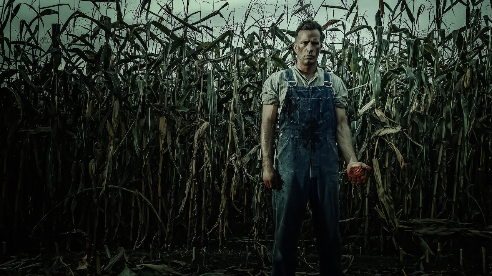
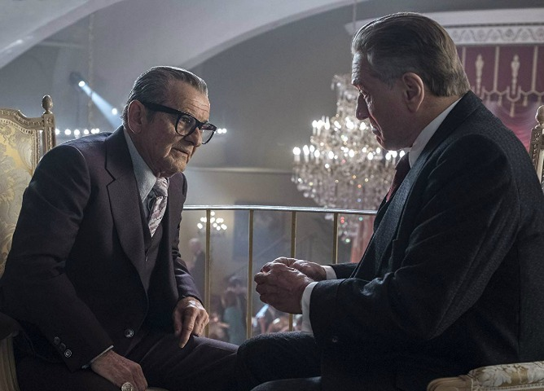
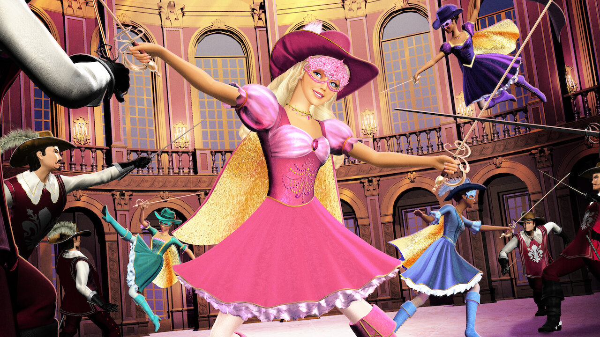
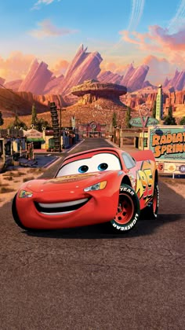
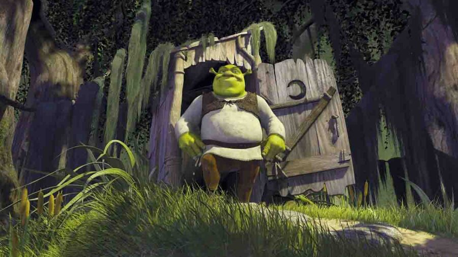
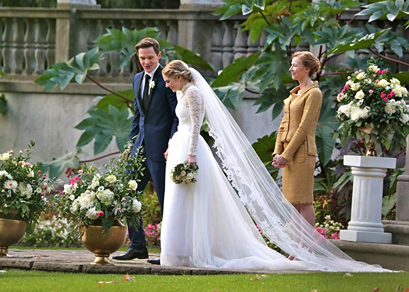
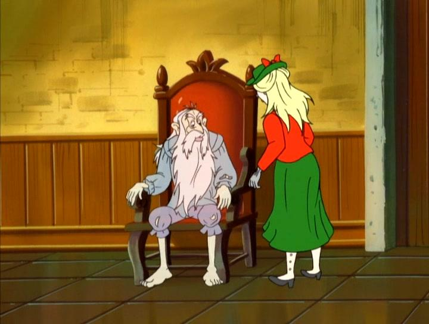
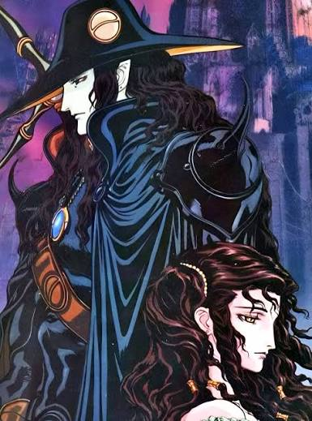
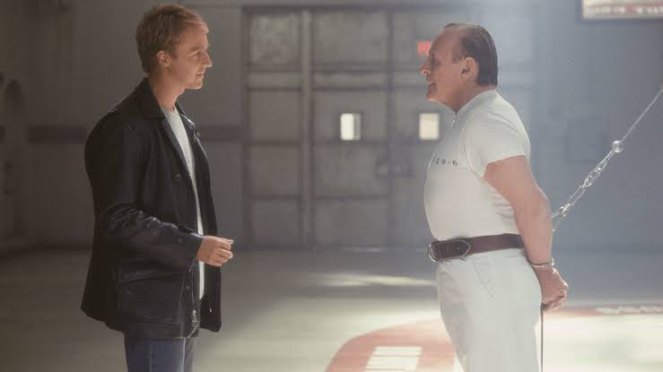

Any Cine
En Any Cine te mostramos los tráilers más recientes y las novedades. También seguimos de cerca los estrenos en distintas plataformas. Compartimos noticias del momento y próximos lanzamientos de peliculas. Todo lo que necesitas para estar al día en un solo lugar.

Un granjero admite haber asesinado a su mujer, pero su muerte es solo el inicio de una historia macabra. Basada en la novela corta de Stephen King.

Narra la vida de Frank Sheeran, un veterano de guerra que se convierte en camionero y termina trabajando como sicario para la mafia y un poderoso líder sindical.

Una joven campesina que viaja a París con el sueño de convertirse en mosquetera real, se une a otras tres sirvientas que comparten su mismo anhelo.

Un arrogante coche de carreras que, de camino a un importante campeonato, se pierde y termina atrapado en Radiador Springs.

Un ogro solitario que emprende una aventura junto a un burro parlante para rescatar a la princesa y lograr que el malvado lord desaloje su pantano.

Una joven que se casa con el heredero de una dinastía de magnates. Durante su noche de bodas, la familia la obliga a participar en un ritual.

Una familia que hereda un castillo inglés habitado por un fantasma. El intenta asustarlos pero es ignorados por el pragmatismo de la familia.

Un cazador mitad humano y mitad vampiro. Es contratado para rescatar a Charlotte, una joven que fue secuestrada por Meier Link un noble vampiro.

Un exagente con talento para meterse en la mente de los asesinos. Trata de atrapar a un homicida, se ve obligado a pedir ayuda a el Dr. Hannibal